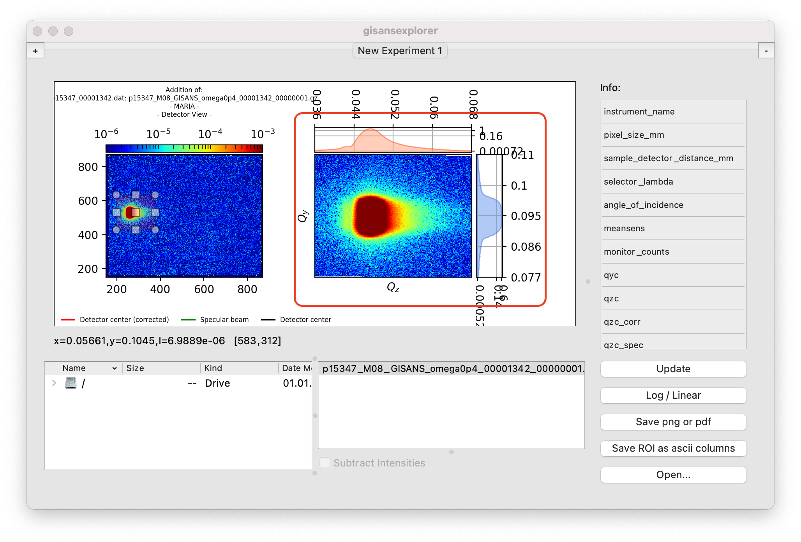

How to…¶
Open a first data file¶
{kind=link}
{kind=link}
{kind=link}
Select the region of interest (ROI)¶
- By using the ROI selector on the left plot:
Click a corner and drag to resize.
Click the center and drag to move.
- By setting the limits on the information table on the right:
Set the pixel limit values x0, y0, xf, xf (left, bottom, right, top).
After they turn green –wrong entries will turn red, click Update.
{kind=link}
{kind=link}
Take a closer look to the ROI plots¶
By double clicking on any of the ROI plots,  ,three pop-up windows will appear:
{kind=link}
{kind=link}
{kind=link}
{kind=link}
{kind=link}
Save individual figures¶
Refer to the step above and click the floppy disk icon in the desired figure.
Add or subtract intensities from different Gisans maps¶
After loading one or more files, click the corresponding maps on the gisans map list. To select several files, hold the keys
shiftorctrlwhile clicking on each entry. This will automatically show the addition of the intensities of the selected gisans maps.
To show the subtraction of the intensities, select any two entries on the list and tick the checkbox Subtract intensities
N.B. Addition is calculated in the obvious way, \(I = I_A + I_B\), while subtraction is calculated as \(I = |I_A - I_B|\)